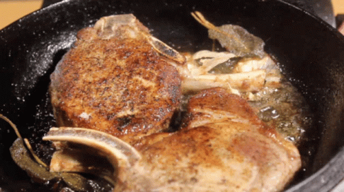

PORK RECIPE

Pork is the most popular meat in the Western world,
particularly in Central Europe.
INGREDIENT
- 2 tablespoons hot chili paste
- 2 tablespoons soy sauce
- 2 tablespoons brown sugar
- 1 1-inch piece of ginger, peeled and finely grated
- 1 garlic clove, finely grated
- 1 1/2 pounds pork tenderloin, very thinly sliced
- vegetable oil
STEP BY STEP METHOD OF PREPARATION
- Shake all the sauce ingredients in a jar. Pour the sauce over the pork and allow it to rest for 20 minutes – 1 hour.
- Heat a good searing skillet (such as cast iron) over high heat. Add just a little bit of vegetable oil.
- When the oil is hot and shiny, add the pork in a single layer (you may need to do this in batches). Cook, undisturbed, for 1-2 minutes until you are getting that nice caramelized look. Flip and repeat to finish.
- That’s it! Serve with rice and veggies (details in notes section) and enjoy your flavortown masterpiece.
Go Back
You may also like
Nigeria Suya Recipe
TANDORI CHICKEN RECIPE